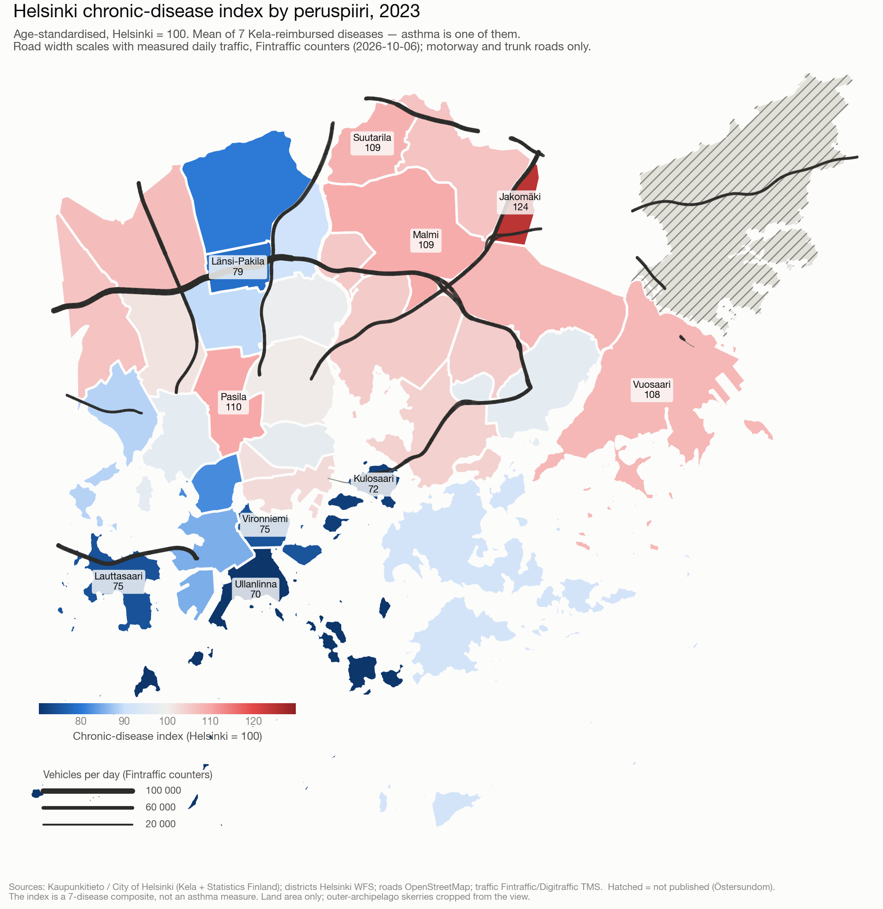
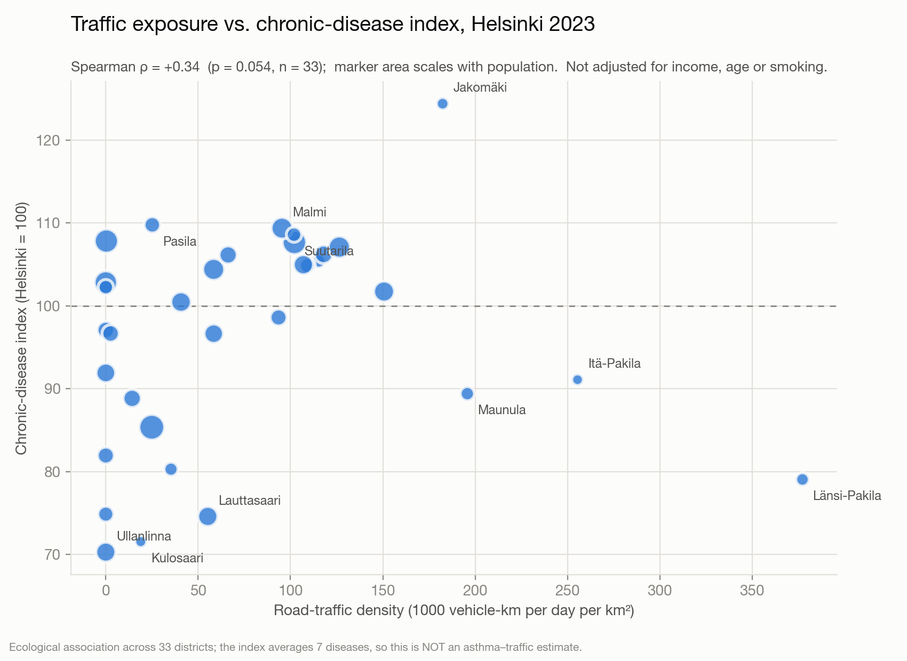

I wanted to know whether people who live near motorways get more lung disease. In Helsinki you can get much closer to an answer than almost anywhere in Europe — and still not all the way. This is what the open data actually supports, and where it stops.
The City of Helsinki publishes an age-standardised kansantauti-indeksi (chronic-disease index) for each of its 33 reported districts (peruspiiri). It is built from Kela entitlements to special medicine reimbursement, and it is the unweighted mean of seven sub-indices: asthma, diabetes, rheumatoid arthritis, psychoses, coronary artery disease, heart failure and hypertension. Each is indexed against the city average (Helsinki = 100).
The seven are averaged with equal weight, so asthma contributes about 14% of the number regardless of how common it is. An asthma-only series exists — the city commissioned these figures from Kela as a custom statistics order — but it is not open data.

The obvious exposure measure — the share of a district's land within 300 m of a motorway — turns out to be close to useless. It cannot tell a forest beside a motorway from a roadside neighbourhood, and it treats a slip road like a six-lane artery.
So instead each road is weighted by what actually drives on it. Finland's road authority runs automatic counters (TMS/LAM) that are open through Digitraffic, including raw per-vehicle records. 72 of them sit in the Helsinki region; the busiest carries about 118,000 vehicles a day. Exposure then becomes vehicle-kilometres per day per square kilometre of district.
| Exposure measure | Spearman ρ | p | n |
|---|---|---|---|
| Traffic density (vehicle-km/day/km²) | +0.34 | 0.054 | 33 |
| Share of land within 300 m of a motorway | +0.09 | 0.62 | 33 |
Weighting by measured traffic roughly quadruples the association. That is the methodological point of the exercise, and it is stable: averaging three weekdays of counts instead of one changes ρ from +0.338 to +0.339.

Open the interactive map full screen · Download the district table (CSV)
The exposure side is the easy half here: the Finnish Meteorological Institute's ENFUSER model gives hourly NO₂ and PM2.5 at 10–15 m resolution across the Helsinki region, free. The binding constraint is the outcome side, and the credible route is register data with residential coordinates under a Findata permit — not district averages.
For a causal question, the stronger design is a natural experiment: Stockholm's congestion charge, Germany's staggered low-emission zones, or London's ULEZ, where children's lung-function growth improved measurably while the earlier, weaker LEZ showed nothing.
avoindata:Maavesi_peruspiirit (land only). CC BY 4.0